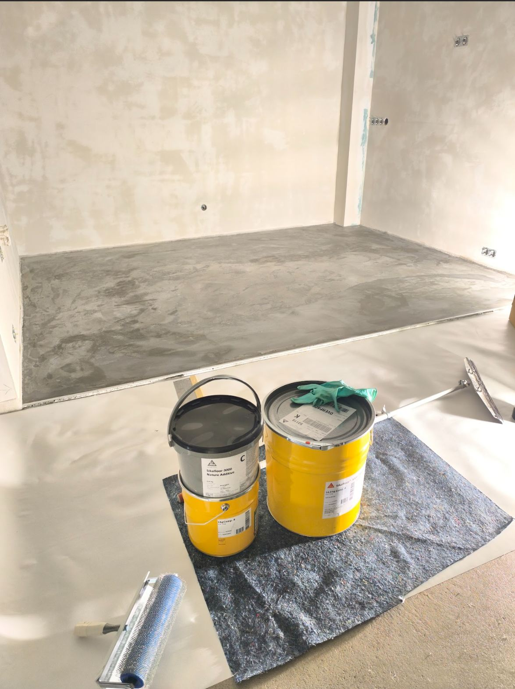
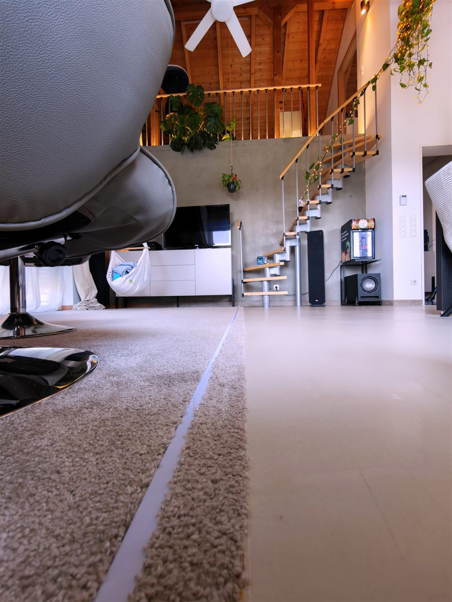
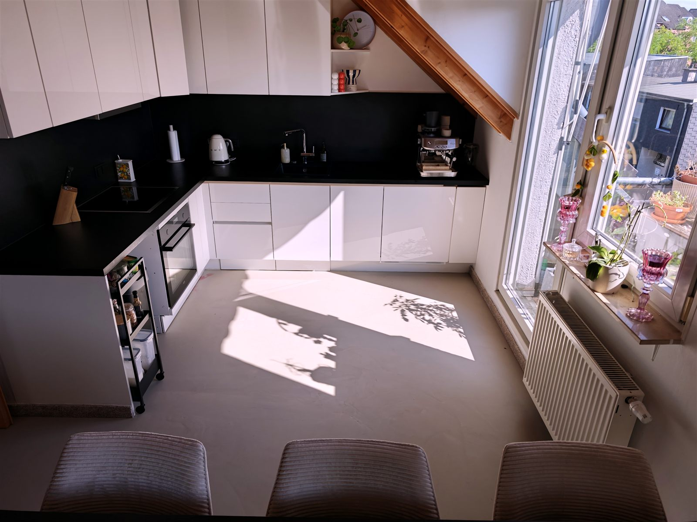
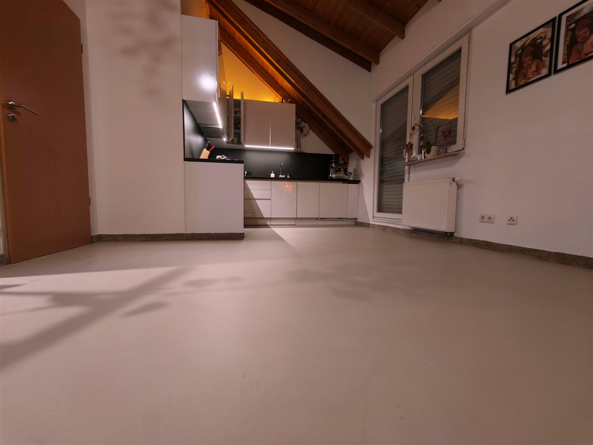
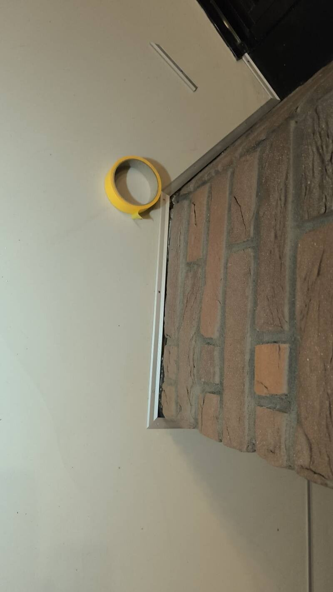
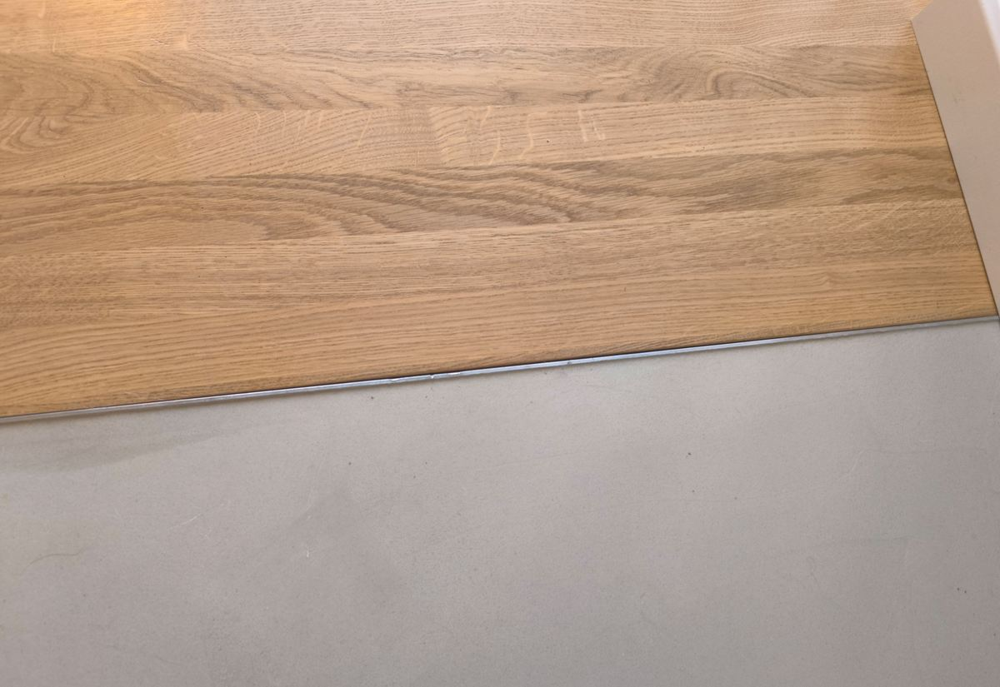

Referenz
Auch kleinere Bereiche — fugenlos perfekt integriert
Fugenloser PU-Boden auf Estrich mit elastischem Sika ComfortFloor Nature-System. Minimalistischer Übergang zum Wohnbereich — Naturgrau, mit Kork-Additiv, seidenmatt versiegelt.
WhatsApp Anfrage
Projekte
Weitere Einblicke
Eindrücke aus aktuellen PU-Projekten in Köln und Umgebung.





